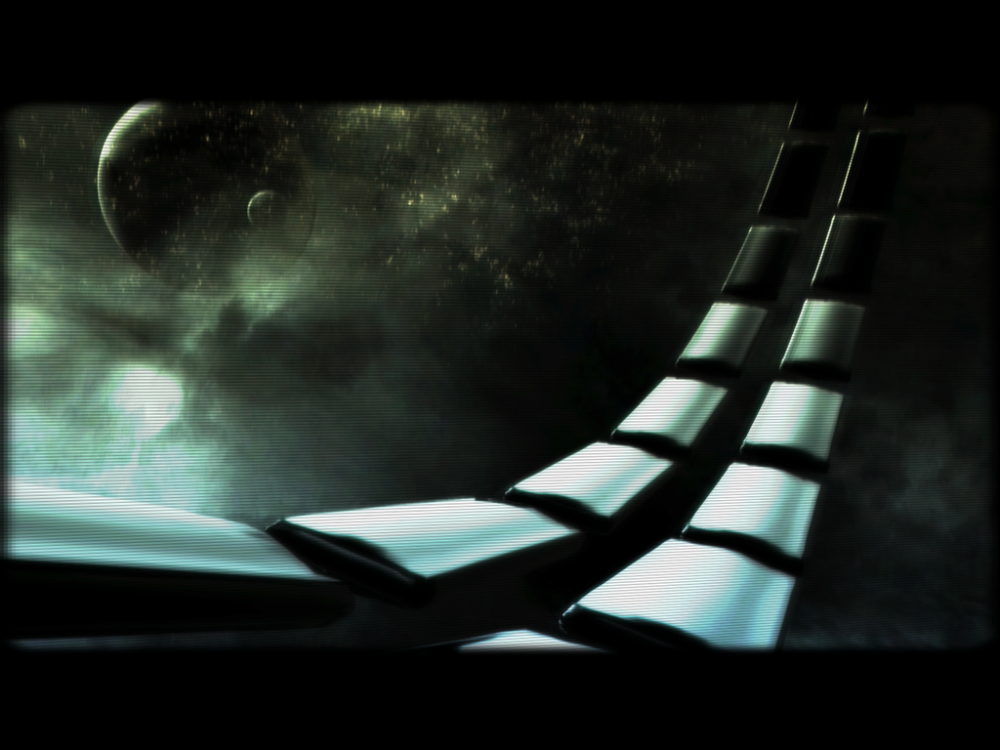
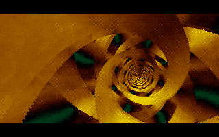
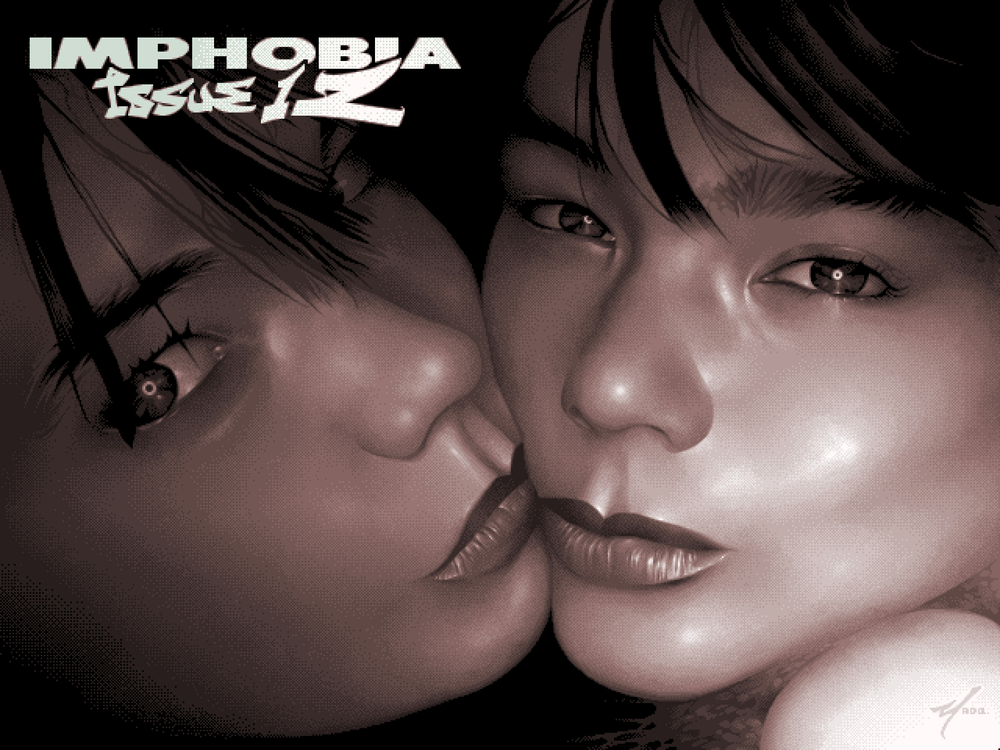
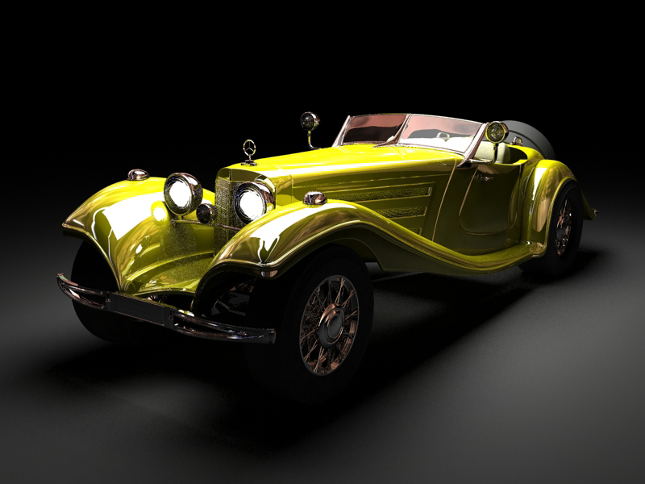
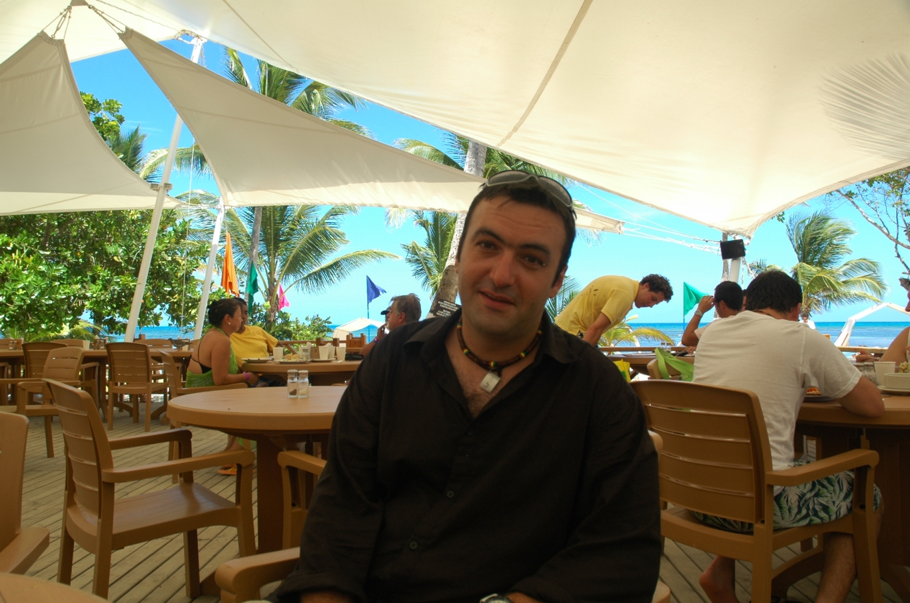

Az igazi bittologatás, a demoscene
(The real bitpushing, the demoscene)
Minier Zsolt
Bittologatók, 2018 január
How it all began?
cracktros


Zak McKracken Cracktro (Atari ST) / The Sirius Cybernetics Corporation & Tumult


Commodore
Commodore 64
- Released in 1982
- RAM: 64 Kb
- CPU: MOS 6502, ~1 Mhz
- GFX: VIC-II
- SOUND: SID

Amiga 500
- Released in 1987
- RAM: 512 Kb
- CPU: Motorola 68000, ~7 Mhz
- Control: Agnus (Blitter, Copper)
- GFX: Denise
- SOUND: Paula

IBM PC 5150
- Released in 1981
- RAM: 16 Kb
- CPU: Intel 8088, 4.77 Mhz
- GFX: CGA (16 Kb extra)
- SOUND: PC Speaker
Platforms 1/3 (Pouet.net, 2018 january)
Acorn, Alambik, Amiga AGA, Amiga OCS/ECS, Amiga PPC/RTG, Amstrad CPC, Amstrad Plus, Android, Apple II, Apple II GS, Atari Falcon 030, Atari Jaguar, Atari Lynx, Atari ST, Atari STe, Atari TT 030, Atari VCS, Atari XL/XE, BBC Micro, BeOS, BK-0010/11M, C16/116/plus4, C64 DTV, Commodore 128, Commodore 64, Dreamcast, Enterprise, Flash, FreeBSD, Gameboy, Gameboy Advance, Gameboy Color, Gamecube, Gamepark GP2XPlatforms 2/3
Gamepark GP32, Intellivision, iOS, Java, Javascript, Linux, MacOS, MacOSX Intel, MacOSX PPC, mIRC, MS-DOS, MS-DOS/gus, MSX, MSX 2, MSX 2 plus, MSX Turbo-R, NEC TurboGrafx/PC Engine, NeoGeo Pocket, NES/Famicom, Nintendo 64, Nintendo DS, Nintendo Wii, Oric, PalmOS, PHP, PICO-8, Playstation, Playstation 2, Playstation 3, Playstation Portable, PocketPC, Pokemon Mini, Raspberry Pi, SAM Coupé, SEGA Game GearPlatforms 3/3
SEGA Genesis/Mega Drive, SEGA Master System, SGI/IRIX, Sharp MZ, SNES/Super Famicom, Solaris, Spectravideo 3x8, Thomson, TI-8x, TRS-80/CoCo, Vectrex, VIC 20, Virtual Boy, Windows, Wonderswan, XBOX, XBOX 360, ZX Enhanced, ZX Spectrum, ZX-81Party productions
demo, 64k intro, 4k intro, game, 1k intro, 256b intro
gfx, oldschool gfx, render, photo
music, oldschool music, 4 channel music
wild, animation, film, fun (disk throwing, etc.)
4k procedural gfx
live coding, fast gfx, fast music
live act
lamer demo (.hu speciality)
Other productions
diskmag, gfx disk (slideshow), music disk
tools
sources
Parties
First: Plutonium Party 1984
Biggest: Assembly (1992->), The Party (1991-2002), The Gathering (1992->)
Last: never!
2017: 115+ parties
Lamer Demo
64k intro

|
 |
4k intro

|
|
1k intro
256b intro
|  | |
Demo

|
|

|
Graphics
|  |

|
Render
|  |
Oldschool gfx
Photo

|
|
Graphics
Music
The Ultimate Soundtracker v1.21 (Amiga, 1987) by Karsten Obarski
Daxx, H0ffman, Yolk, Jeroen Tel, 4-mat, Rez, Scorpik, Cyborg Jeff, Lizardking, Captain, Jesper Kyd, kb, Dune, Dizzy, Radix, Wayfinder, Jester, Jogeir Liljedahl, Moby, Purple Motion, Skaven, XTD, Saga Musix, Nagz, Laxity, Neurodancer, Tempest, Virt, Vincenzo
Groups
Complex, The Silents
Romania
me (Merlin/Phantom Image, Resource, Black Box)
Reunion 1997-2001

Dracula 1997-2001
Groups
Brain Damage, Eyes Team, Hipnotica, General Failure, Phantom Image, Plastic Surgery, PRSC, Transdimensional, Virtual Eagle
loners: Digital Dessire, Hex, Nekitu, Zen, ...
...
Life after the demoscene
a few examples
The Silents (Amiga) -> DICE
 |
|
| 1992 | 2016 |
Future Crew (PC), Scoopex (Amiga), Aggression (Atari) -> Remedy Entertainment
| 1996 | 2016 |
Kim Dot Com - House of Coolness (BBS)
Let's watch some demos!

Desert Dream, energia, Second Reality, Sunflower, Square, The Fulcrum, Hyperventilation, Dope, Crystal Dream 2, Hardwired, Starstruck, Tint, Arte, Nexus 7, State of the Art, 9 Fingers, mosaik, Martian, Super Television, Vivid Experiment, Stars - Wonders of the World, Machines of Madness, State of Mind, The Popular Demo, Debris, Mutha 2, Riprap, Iconoclast, Verses, Masagin, Intrinsic Gravity, A Deepness in the Sky, Love Creation MAX, Dutch Breeze, Comaland, Wonderland XIII, RSI Megademo, Eden (Explora II), Agenda Circling Forth, Photon, Robotnik, Lapsuus, Dramatic Pixels, 8088 Domination
Further resources
Fun stuff
- Rob is jarig
- Donald Knuth
- Giorgio Moroder's videographer vs. Spin by ASD
- Kultúrház 1, 2 (TV)